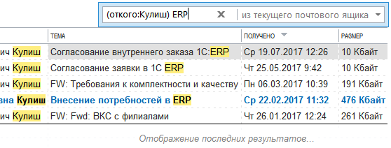

Строка поиска в Microsoft Outlook 2013 очень неинформативна. Это просто строка, в которой, по мнению неподготовленных пользователей, просто пишется слово и фраза, которую надо найти в письмах. Проблема в том, что такой поиск не может быть точным - находится слишком много писем.
В более старых версиях Outlook поиск осуществлялся из специального окна, в котором можно было настроить критерии поиска. Это окно открывалось при нажатии кнопки поиска. Дизайнеры интерфейса Microsoft Outlook 2013 решили спрятать это окно куда подальше. Теперь оно спрятано за кнопкой, расположенной так: вкладка "Поиск", выпадающий список "Средства поиска", пункт "Расширенный поиск".
Однако, в Microsoft Outlook 2013 есть встроенный язык запросов, который работает в строке поиска:

Синтаксис запроса поиска в общем виде имеет простую форму: ключевое слово:ваш критерий поиска.
Пример:
откого:ivan
Для уточнения критериев поиска можно также использовать логические операторы И, НЕ, ИЛИ, <, >, = и т. д , что отмечено в таблице. Логические операторы должны обязательно вводиться прописными (т. е. большими) буквами.
В запросах
|
Запрос |
Результаты |
|
ivan |
Элементы, содержащие ivan, IVAN, IvAn или любое другое сочетание строчных и прописных букв. Мгновенный поиск работает без учета регистра. |
|
ivan voronkov |
Элементы, содержащие оба слова (ivan и voronkov), но не обязательно в указанном порядке. |
|
ivan И voronkov |
Элементы, содержащие оба слова (ivan и voronkov), но не обязательно в указанном порядке. Обратите внимание: логические операторы, такие как И, НЕ и ИЛИ, следует вводить прописными буквами. |
|
ivan НЕ voronkov |
Элементы, содержащие ivan, но не voronkov. |
|
ivan ИЛИ voronkov |
Элементы, содержащие ivan, voronkov или оба слова. |
|
"ivan voronkov" |
Элементы, содержащие точную фразу ivan voronkov. Обратите внимание на использование двойных кавычек: результаты поиска будут точно соответствовать фразе в кавычках. |
|
откого:"ivan voronkov" |
Элементы, отправленные пользователем ivan voronkov. Обратите внимание на использование двойных кавычек: результаты поиска будут точно соответствовать фразе в кавычках. |
|
откого:"ivan voronkov" содержимое:"отчет о состоянии" |
Элементы, отправленные пользователем ivan voronkov и содержащие фразу отчет о состоянии в строке темы, тексте письма или вложениях. Обратите внимание на использование двойных кавычек: результаты поиска будут точно соответствовать фразе в кавычках. |
|
свложениями:да |
Элементы, имеющие вложения. Те же результаты можно получить, используя запрос "свложениями:истина". |
|
вложение:презентация.pptx |
Элементы, имеющие вложения с именем презентация.pptx или вложения, которые содержат фразу презентация.pptx. |
|
тема:"ivan voronkov" |
Элементы, в теме которых содержится фраза ivan voronkov. |
|
тема:ivan voronkov |
Элементы, которые содержат слово ivan в строке темы и слово voronkov в любом другом месте. |
|
копия:ivan voronkov |
Элементы, которые содержат отображаемое имя ivan voronkov в строке "Копия". |
|
копия:ivanvoronkov@contoso.com |
Элементы, содержащие адрес электронной почты ivanvoronkov@contoso.com в строке "Копия". |
|
ск:ivan |
Элементы, содержащие имя ivan в строке "СК". |
|
размерсообщения|размером|сразмером:<10 КБ |
Элементы, размер которых меньше 10 КБ. Обратите внимание на использование оператора сравнения "меньше" (<). |
|
размерсообщения|размером|сразмером:>5 МБ |
Элементы, размер которых превышает 5 МБ. Обратите внимание на использование оператора сравнения "больше" (>). |
|
получено:=01.01.2006 |
Элементы, полученные 01.01.2006 г. Обратите внимание на использование оператора сравнения "равно" (=). |
|
получено:вчера |
Элементы, полученные вчера. Функция "Мгновенный поиск" также распознает следующие значения дат:
|
|
получено:прошлая неделя |
Элементы, полученные на прошлой неделе. Обратите внимание: если выполнить этот запрос еще раз через месяц, результаты будут другими, так как используется относительное значение времени. |
|
срок:прошлая неделя |
Элементы, помеченные к исполнению с датой выполнения на прошлой неделе. |
|
размерсообщения|размером|сразмером:крошечные |
Элементы, размер которых меньше 10 КБ. |
|
размерсообщения|размером|сразмером:маленькие |
Элементы, размер которых составляет от 10 до 25 КБ. |
|
размерсообщения|размером|сразмером:средние |
Элементы, размер которых составляет от 25 до 100 КБ. |
|
размерсообщения|размером|сразмером:большие |
Элементы, размер которых составляет от 100 до 500 КБ. |
|
размерсообщения|размером|сразмером:очень большие |
Элементы, размер которых составляет от 500 КБ до 1 МБ. |
|
отметкакисполнению:к исполнению |
Элементы, помеченные к исполнению. |
|
размерсообщения|размером|сразмером:гигантские |
Элементы, размер которых превышает 5 МБ. |
|
отметкакисполнению:истина |
Элементы, помеченные к исполнению. |
|
откого:ivan (получено: 07.01.2005 ИЛИ получено: 08.01.2005) |
Элементы, полученные от пользователя ivan 07.01.2005 г. или 08.01.2005 г. Обратите внимание на использование скобок для группировки дат. |
|
получено:>=01.10.2006 И получено:<=05.10.2006 |
Элементы, полученные с 01.10.2006 по 05.10.2006. |
|
получено:>01.10.2006 И получено:<05.10.2006 |
Элементы, полученные позже 01.10.2006, но раньше 05.10.2006. |
|
отправлено:вчера |
Элементы, отправленные вами вчера. |
|
имяполучателя:ivan |
Элементы, которые вы отправили пользователю ivan (если поиск выполняется в папке Отправленные). |
|
прочитано:нет |
Элементы, которые не были прочитаны. Те же результаты можно получить, используя запрос "прочитано:ложь". |
|
тема:состояние получено:май |
Элементы, полученные от любых пользователей в мае (любого года) и содержащие слово состояние в строке темы. |
|
начало:на следующей неделе тема:состояние |
Элементы календаря, относящиеся к следующей неделе и содержащие слово состояние в строке темы. |
|
повторяется:да |
Повторяющиеся элементы календаря. |
|
организатор:ivan |
Элементы календаря, для которых организатором является ivan. |
|
категории:бизнес |
Элементы, которые относятся к категории Бизнес. |
|
имяконтактноголица:ivan |
Контакты, которые содержат слово ivan в поле "Имя". |
|
фамилияконтактноголица:voronkov |
Контакты, которые содержат слово voronkov в поле "Фамилия". |
|
псевдоним:ivan |
Контакты, которые содержат слово ivan в поле "Псевдоним". |
|
должность:терапевт |
Контакты, которые содержат слово терапевт в поле "Должность". |
|
пейджер:555-01-00 |
Контакты, которые содержат 555-01-00 в поле "Пейджер". |
|
работа,телефон:555-01-00 |
Контакты, которые содержат 555-01-00 в поле "Служебный телефон". |
|
дом,телефон:555-01-00 |
Контакты, которые содержат 555-01-00 в поле "Домашний телефон". |
|
мобильныйтелефон:555-01-00 |
Контакты, которые содержат 555-01-00 в поле "Мобильный телефон". |
|
автомобиль,телефон:555-01-00 |
Контакты, которые содержат 555-01-00 в поле "Телефон в машине". |
|
работа,факс:555-01-00 |
Контакты, которые содержат 555-01-00 в поле "Факс". |
|
дом,факс:555-01-00 |
Контакты, которые содержат 555-01-00 в поле "Факс дом." |
|
работа,адрес:(ул. Вишневая, д. 345, Воронеж, Россия, 123456) |
Контакты, которые содержат адрес ул. Вишневая, д. 345, Воронеж, Россия, 123456 в поле "Рабочий адрес". Обратите внимание на то, что адрес заключен в скобки. |
|
дом,адрес:(ул. Вишневая, д. 345, Воронеж, Россия, 123456) |
Контакты, которые содержат адрес ул. Вишневая, д. 345, Воронеж, Россия, 123456 в поле "Домашний адрес". Обратите внимание на то, что адрес заключен в скобки. |
|
работа,город:воронеж |
Контакты, которые содержат слово воронеж в поле "Город (раб. адрес)". |
|
работа,индекс:123456 |
Контакты, которые содержат 123456 в поле "Индекс (раб. адрес)". |
|
улица:(ул. Вишневая, д. 345) |
Контакты, которые содержат строку "ул. Вишневая, д. 345" в поле "Улица (раб. адрес)". Обратите внимание на то, что адрес заключен в скобки. |
|
дом,улица:(ул. Вишневая, д. 345) |
Контакты, которые содержат строку "ул. Вишневая, д. 345" в поле "Улица (дом. адрес)". Обратите внимание на то, что адрес заключен в скобки. |
|
деньрождения:04.06.1960 |
Контакты, которые содержат 04.06.1960 в поле "День рождения". |
|
веб-страница:www.contoso.com |
Контакты, которые содержат URL-адрес www.contoso.com в поле "Веб-страница". |